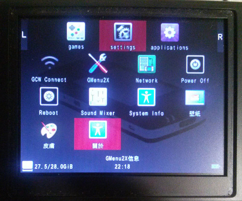

1. 複製(PixelManiaConden.ttf PixelManiaWide.ttf)到資料夾/media/data/local/home/.gmenu2x/skins/GCW/fonts 2. 修改字體(/media/data/local/home/.gmenu2x/skins/GCW/skin.conf)
font="skin:fonts/PixelManiaConden.ttf"
完成
